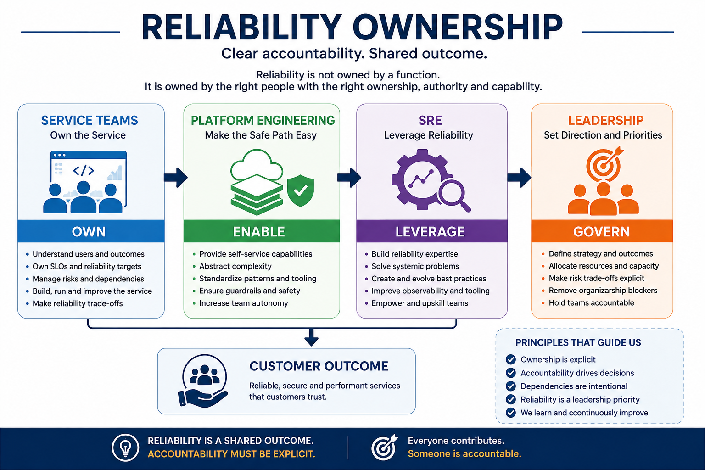

The Ownership Illusion
Reliability usually breaks down long before the system actually goes down.
It starts with a much quieter problem: Nobody is quite sure who owns the outcome.
Application teams own the code. Platform teams own infrastructure. SRE teams
own reliability practices. Operations teams respond to production events.
All of those statements can be true at the same time—and the customer can
still experience an unreliable service.
The problem is not distributed responsibility itself. The problem occurs when
accountability becomes so distributed that nobody has the authority, context,
and capability to actually change the outcome.
Being paged is not the same as owning the outcome.
A mature reliability organization therefore needs to answer a deceptively
simple question:
Who is actually accountable for the reliability of this service?
The answer cannot simply be "SRE."
SRE can provide expertise, standards, tooling, automation, and leverage.
But if SRE becomes the permanent owner of application reliability, the
organization has created a dependency rather than a scalable capability.
When SRE Becomes the Escalation Team
One of the easiest ways for reliability ownership to become unclear is for
SRE to become exceptionally good at rescuing other teams.
A production problem occurs. The application team escalates. SRE investigates.
SRE identifies the root cause. SRE recommends the fix. Sometimes SRE implements
the fix.
The immediate problem gets solved.
But something else has happened.
The organization has quietly learned that reliability problems belong to SRE.
Over time, the pattern becomes predictable:
- Application teams focus primarily on feature delivery.
- SRE absorbs increasing amounts of service-specific operational work.
- Escalations become the normal mechanism for resolving reliability issues.
- SRE capacity becomes the limiting factor for reliability improvement.
- Teams become less capable of independently operating their own services.
This is the escalation trap.
The problem isn't that SRE helps teams. That is part of the value SRE should
provide.
The problem is when helping teams gradually becomes
owning reliability for teams.
A useful leadership test is:
If SRE stopped answering application-specific questions tomorrow, which teams
would still know how to operate their services safely?
SRE should be the force multiplier for reliability—not the shock
absorber for organizational ownership problems.
What Service Ownership Really Means
Saying "the service team owns reliability" is easy. Making that statement
real requires much more than putting a team name next to a service in a
service catalog.
Real service ownership includes at least five areas.
1. Reliability objectives
The service team should understand what level of reliability the service
actually needs and why that level matters to customers and the business.
Ownership means understanding the SLO—not simply reporting it.
2. Operational behavior
The team should understand how the service behaves in production, what
signals indicate degradation, how failures are handled, and what actions
are available when reliability deteriorates.
3. Reliability risk
Teams need to understand the risks created by their architecture, dependencies,
deployments, capacity constraints, and operational practices.
4. Production learning
Reliability ownership continues after an incident. The team should be
responsible for learning from failures and improving the service rather
than repeatedly depending on another function to compensate for the same
weakness.
5. Capacity for reliability work
Ownership is meaningless if teams have no capacity to act on reliability risk.
If reliability work is always postponed behind feature delivery, the
organization has not really created ownership. It has created responsibility
without capacity.
This leads to an important principle:
The team accountable for reliability must have enough control, capability
and context to influence the reliability outcome.
Ownership does not mean isolation. A service team can depend heavily on
platform, SRE, security, networking, data, or other capabilities while
remaining accountable for the service outcome.
A simple test is to ask:
- Who owns the service outcome?
- Who can make the decisions that influence it?
- Who can remediate the major reliability risks?
- Who has the capability to operate the service safely?
- Who has capacity to improve it?
If the answers point to different groups with no clear decision authority,
ownership is probably still incomplete.
Responsibility ≠ Accountability
This distinction is one of the most important—and most frequently missed—
parts of reliability ownership.
Multiple teams can have responsibility for contributing to reliability.
Accountability still needs to be explicit.
Consider a service with an application layer, database, messaging system,
network dependency, and shared platform.
Each component team can be locally correct while the customer experience
still fails.
The database team can say the database is healthy. The network team can say
the network is healthy. The platform team can say the cluster is healthy.
The application team can say the application is behaving as designed.
Yet the customer cannot complete the transaction.
Someone must still own that outcome.
A useful accountability chain is:
Customer outcome → Service → Engineering team → SRE / Platform enablement
→ Engineering leadership
The service team remains accountable for the service outcome even when other
teams provide critical capabilities.
SRE should provide reliability expertise and systemic leverage, but should
not automatically inherit accountability simply because SRE has deeper
reliability expertise.
This creates an important maturity shift:
- Level 1 — SRE Does It: SRE performs much of the reliability work.
- Level 2 — SRE and Teams Do It Together: capability begins transferring.
- Level 3 — Teams Own It, SRE Enables: service ownership becomes real.
- Level 4 — Reliability Becomes an Engineering Capability: reliability is embedded into how engineering operates.
Good SRE leadership is not about making SRE indispensable.
It is about making reliability scalable.
The Role of Platform Engineering
Platform engineering introduces another potential ownership boundary.
A platform may provide infrastructure, deployment capabilities,
observability, security controls, automation, and operational guardrails.
That does not mean the platform team owns the reliability of every service
running on the platform.
Platform owns the paved road. Product teams own the journey and outcome.
A good platform reduces cognitive load. It makes reliable engineering
practices easier to adopt without requiring every product team to become
an expert in every underlying technology.
A useful platform reliability contract includes:
- Reliable and supported platform capabilities.
- Safe patterns that are easy to adopt.
- Automation for common reliability practices.
- Appropriate guardrails.
- Visibility into platform behavior and dependencies.
The dangerous organizational assumption is:
If we put it on the platform, the platform team owns it.
That model simply moves the ownership problem to another team.
A better decision rule is straightforward:
Reusable capability is a platform candidate. Service-specific risk and
behavior remain with the service team.
The highest-leverage platform principle is:
Solve once. Scale many times.
Platform should make reliability easier—not make product teams less accountable.
What Engineering Leadership Must Own
Reliability ownership is not only an engineering-team concern.
Leadership owns the conditions in which reliability decisions are made.
That includes:
- Setting priorities.
- Making trade-offs explicit.
- Accepting business risk when appropriate.
- Funding reliability capacity.
- Removing organizational blockers.
- Addressing systemic organizational failure modes.
Leadership should not become the operational owner of every reliability
problem. But leadership must own the environment in which teams are expected
to make reliability decisions.
Five questions are particularly useful:
- Who is accountable for the customer outcome?
- Does that team have enough control to influence the outcome?
- Does the team have the capability and capacity to act?
- Where are trade-offs being made explicitly?
- What organizational blocker prevents the right team from owning the problem?
Service teams own the outcome. Platform enables the path.
SRE provides leverage. Leadership owns the environment.
A Practical Reliability Ownership Model
A practical model can be built around five questions:
- Who owns the service outcome?
- Who provides the capability?
- Who provides the expertise?
- Who makes the trade-off?
- Who removes the blocker?
This naturally creates four layers:
- Service Teams — own service outcomes and reliability decisions.
- Platform Engineering — provides reusable capabilities and the paved road.
- SRE — provides reliability expertise, standards, and systemic leverage.
- Engineering Leadership — governs priorities, investment, and organizational decisions.
| Reliability Area |
Service Team |
SRE |
Platform |
Leadership |
| Service reliability |
Accountable |
Enable |
Support |
Govern |
| Service SLO |
Own |
Facilitate |
Support |
Review where material |
| Application resilience |
Own |
Advise |
Provide capabilities |
Prioritize investment |
| Runtime platform |
Consume |
Influence requirements |
Own |
Fund |
| Incident response |
Own service response |
Enable / coordinate |
Support |
Remove systemic blockers |
| Cross-service reliability |
Participate |
Drive systemic improvement |
Participate |
Resolve organizational issues |
| Reliability standards |
Adopt |
Define / enable |
Implement |
Reinforce |
| Reliability investment |
Propose |
Advise |
Propose |
Prioritize |
| Business risk acceptance |
Technical context |
Reliability context |
Platform context |
Own decision |
The decision rule is simple:
Who can make the change that actually reduces the risk?
That team should have the authority and capability required to act.
Escalation does not transfer accountability.
Reliability ownership should also be visible in the engineering system:
service catalogs, on-call models, SLO reviews, architecture decisions,
incident follow-ups, investment planning, and leadership reviews should
reinforce the same ownership model.
Common Reliability Ownership Anti-Patterns
1. SRE owns reliability
This creates a specialist dependency and prevents reliability capability
from spreading into engineering teams.
2. The team owns it because they are on call
Being on call creates an operational responsibility. It does not automatically
mean the team has strategic accountability, authority, or capacity.
3. Platform owns everything underneath
Infrastructure ownership does not equal ownership of application outcomes.
4. Everyone owns everything
Shared responsibility without explicit accountability often means nobody can
make the final decision.
5. SLOs create ownership
An SLO measures an outcome. It does not establish decision rights, capacity,
or accountability by itself.
6. The incident commander owns the incident
The incident commander coordinates response. The service team remains
accountable for the service and the engineering improvements that follow.
7. The person with the deepest expertise owns the problem
Expertise should influence decisions. It should not automatically transfer
ownership to the most technically knowledgeable person in the room.
8. Reliability is everyone's responsibility
Everyone contributing to reliability is healthy. Saying that everyone is
accountable for the outcome is not.
9. A fixed incident means a fixed problem
Recovery restores service. Ownership requires asking why the failure happened,
what enabled it, and who has the authority to prevent recurrence.
These anti-patterns share one characteristic:
The organization has distributed responsibility without making
accountability explicit.
A Leadership Checklist for Reliability Ownership
Engineering leaders can use the following checklist during reliability reviews:
- Name the accountable team. Every critical service should have one.
- Confirm control. The accountable team must be able to influence the outcome.
- Confirm capability. Teams need the skills and tools required to operate safely.
- Fund reliability. Ownership without capacity is not ownership.
- Make SRE create leverage. SRE should increase organizational capability, not absorb every problem.
- Make platform create autonomy. The platform should reduce friction rather than create another dependency.
- Turn incidents into organizational learning. Learning should change systems, practices, or decisions.
- Make reliability trade-offs explicit. Risk acceptance should be visible rather than accidental.
A useful leadership review can ask:
- Who owns each of our most business-critical services?
- Can that team actually change the major risks?
- What reliability decisions can the team make without escalation?
- Where is SRE doing work that should eventually become team capability?
- Where is the platform reducing cognitive load?
- Which recurring incidents reveal an ownership problem?
- Where are reliability investments being deferred?
- Which risks require an explicit leadership decision?
- Would ownership remain clear if key individuals left?
- Can the organization explain reliability accountability without drawing an organizational map?
A simple maturity progression is:
- Level 1 — SRE Does It: SRE absorbs reliability work.
- Level 2 — SRE and Teams Do It Together: capability begins transferring.
- Level 3 — Teams Own It, SRE Enables: service ownership becomes real.
- Level 4 — Reliability Becomes an Engineering Capability: reliability becomes embedded in engineering.
One practical exercise is to take the five services most critical to the
business and document:
- Service owner
- Business outcome
- SLO
- Top reliability risk
- Critical dependency
- Who can remediate the risk
- SRE role
- Platform role
- Leadership decision required
If those answers are difficult to produce, the organization probably has
an ownership problem—not simply a documentation problem.
The Leadership Question That Matters
Can the organization reliably produce reliable systems without depending
on a small group of experts to rescue it?
A mature organization does not eliminate SRE.
It does not eliminate platform engineering.
And it does not simply push operational work onto product teams and call
that ownership.
Instead, it creates clear accountability and gives each part of the
engineering system the capabilities required to contribute effectively.
Service teams own the decisions they control.
Platform engineering makes reliable engineering easier to scale.
SRE provides expertise, standards, and leverage.
Leadership creates the priorities, investment, and decision rights that
make those responsibilities sustainable.
The ultimate test is uncomfortable but useful:
If your most experienced SREs were unavailable tomorrow, would your
engineering organization still know who owns reliability—and have the
capability to act?
If the answer is uncertain, the problem may not be your SRE capacity.
It may be your ownership model.
Closing Perspective
Reliability is a shared outcome.
Accountability should still be explicit.
Service teams own the decisions they control. Platform engineering makes
reliable engineering easier to scale. SRE provides expertise, standards,
and leverage. Leadership creates the priorities, investment, and decision
rights that make those responsibilities sustainable.
The objective is not to create an organization where SRE is indispensable.
The objective is to create an organization where reliability is.
Reliability scales when ownership scales with it.
If your most experienced SREs were unavailable tomorrow, would your
engineering organization still know who owns reliability—and have the
capability to act?